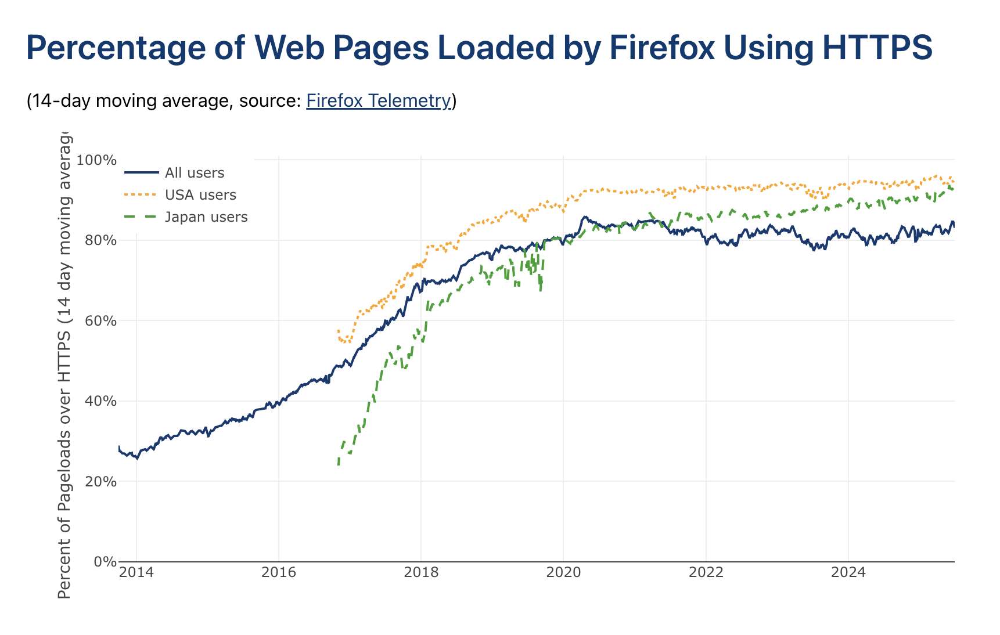

For some reason, nobody's written about what it takes to crawl a big chunk of the web in a while: the last point of reference I saw was Michael Nielsen's post from 2012
Obviously lots of things have changed since then. Most bigger, better, faster: CPUs have gotten a lot more cores, spinning disks have been replaced by NVMe solid state drives with near-RAM
I/O bandwidth, network pipe widths have exploded, EC2 has gone from a tasting menu of instance types to a whole rolodex's worth, yada yada. But some harder: much more of the web is dynamic,
with heavier content too. How has the state of the art changed? Have the bottlenecks shifted, and would it still cost ~$41k to bootstrap your own Google?
I wanted to find out, so I built and ran my own web crawler
Time limit of 24 hours. Because I thought a billion pages crawled in a day was achievable based on preliminary experiments and 40 hours doesn't sound as cool. In my final crawl, the average active time of each machine was 25.5 hours with a tiny bit of variance. This doesn't include a few hours for some machines that had to be restarted.
Budget of a few hundred dollars. Nielsen's crawl cost a bit under $580. I'm lucky enough to have some disposable income saved up, and aimed for my final crawl to fit in the same. The final run including only the 25.5 active hours cost about $462. I also ran a bunch of small-scale experiments while optimizing the single-node system (which cost much less) and a second large-scale experiment to see how far I could take vertical scaling (which I cut off early, but was in the same ballpark).
HTML only. The elephant in the room. Even by 2017 much of the web had
come to require JavaScript. But I wanted an apples-to-apples comparison with older web crawls, and in any case, I was doing this as a side project and didn't have time to add and optimize
a bunch of playwright workers. So I did things the old fashioned way: request all links, but don't run any JS - just parse the HTML as-is and add all links from <a> tags to the frontier.
I was also curious how much of the web can still be crawled this way; as it turns out a lot!
Politeness. This is super important! I've read a couple stories (example) about how much pain is caused to admins by massive web crawls that don't respect robots.txt, spoof other agents to evade blocks, and relentlessly hammer endpoints. I followed prior art: I adhered to robots.txt, added an informative user agent containing my contact information, maintained a list of excluded domains which I would add to on request, stuck to my seed list of the top 1 million domains to avoid hitting mom-and-pop sites, and enforced a 70 second minimum delay between hitting the same domain.
Fault-tolerance. This was important in case I needed to stop and resume the crawl for whatever reason (which I did). It also helped a lot for experiments because in my one-time crawl procedure, the performance characteristics were state-dependent: the beginning of the crawl looked pretty different than steady-state. I didn't aim for perfect fault tolerance; losing some visited sites in the recovery after a crash or failure was fine, because my crawl was fundamentally a sample of the web.
The design I ended up with looked pretty different than the typical crawler solution for systems design interviews, which generally disaggregates the functions (parsing, fetching, datastore, crawl state) into totally separate machine pools. What I went with instead was a cluster of a dozen highly-optimized independent nodes, each of which contained all the crawler functionality and handled a shard of domains. I did this because:
In detail, each node consisted of the following:
A single redis instance storing data structures representing the crawl state:
Pool of fetcher processes:
Pool of parser processes:
Other:
0.022*1000*250*(1/30)+0.005*1e6 = $5183.33 with the standard tier
or 0.11*1000*250*(1/30)+0.00113*1e6 = $2046.67 with express - an order of magnitude over what I ended up spending! Even ignoring all PUT costs, it would've been $183.33 at standard or $916.67
at express to hold my data for a day, meaning even if I'd batched pages together it wouldn't have been competitive.
i7i series of storage-optimized instances, and truncated my saved pages to ensure they fit. Obviously truncating wouldn't be a good idea for a real
crawler; I thought about using a fast compression method in the parser like snappy or a slower, background compressor, but didn't have time to try.
The final cluster consisted of:
i7i.4xlarge machine with 16 vCPUs, 128GB RAM, 10Gbps network bandwidth, and 3750GB instance storageThe domain seed list was sharded across the nodes in the cluster with no cross-node communication. Since I also only crawled seeded domains, that meant nodes crawled their own non-overlapping regions of the internet. This was mainly because I ran out of time trying to get my alternate design (with cross-communication) working.
Why just 12 nodes? I found in one experiment that sharding the seed domains too thin led to a serious hot shard problem where some nodes with very popular domains had lots of work to do while others finished quickly. I also stopped the vertical scaling of the fetcher and parser pools at 15 processes total per redis process because redis began to hit 120 ops/sec and I'd read that any more would cause issues (given more time, I would've ran experiments to find the exact saturation point).
I went through a few different designs before ending up with the one above. It seems like most recent crawlers
I also tried pretty hard to make vertically scaling a single node work; I was optimistic about this because so many of the hardware bottlenecks that had
restricted past big crawlsi7i.48xlarge instance which is essentially just 12
i7i.4xlarge machines stuck together. It has quite a bit less network bandwidth (100Gbps instead of 12x25Gbps), but at the throughput needed to hit 1 billion pages in 24 hours,
even if every page was 1MB (which wasn't the case), I'd only be using 8*1e6*(1e9/86400)=92Gbps, with room leftover for outbound (which certainly wasn't 1MB per request!).
The first large-scale design I tried packed everything onto a single i7i.48xlarge, organizing processes into “pods” which looked a lot like the nodes in my final cluster (groups of 16 processes with a
single redis instance), but with cross-communication allowed. A second design removed the cross-communication and just ran independent pods; a large run with this yielded disappointing results
(the entire system managed only 1k pages/sec, which was only a bit over the throughput of a single node in the final cluster). I ran out of my timebox, so gave up and moved to horizontal scaling.
I suspect the limiting factor may be more software (operating system resources) rather than hardware.
I was really surprised by how much of a bottleneck parsing was. In the final system, I only had to allocate processes in a 2:3 parsing-to-fetching ratio, but it didn't start that way, and it took many iterations to get there. In fact, in the first system I built with dedicated parsing/fetching processes, 2 parsers were needed to keep up with 1 (partially idle) fetcher with 1000 workers running at 55 pages/sec. It really looked like parsing was going to keep me from hitting a billion on budget!
This was really surprising to me because it meant my quad-core node wasn't achieving the same throughput that a weaker quad-core box could in 2012. Profiles showed that parsing was clearly
the bottleneck, but I was using the same lxml parsing library that was popular in 2012 (as suggested by Gemini). I eventually figured out that it was because the average web page has gotten
a lot bigger: metrics from a test run indicated the P50 uncompressed page size is now 138KB
Two things ended up helping the most:
lxml to selectolax, a much newer library wrapping Lexbor, a modern parser in C++ designed specifically for HTML5. The page claimed it can
be 30 times faster than lxml. It wasn't 30x overall, but it was a huge boost.
With this setup, I was able to achieve ~160 pages parsed per second with a single parser process, which allowed my final setup to use 9x fetchers and 6x parsers to crawl ~950 pages/sec.
Many treatments of crawling take network bandwidth and DNS to be important bottlenecks. For instance, while researching this topic I emailed Jamie Callan
from CMU about the Sapphire project from 2009
For my crawl, DNS didn't come up at all. I think this is because I limited crawling to my seed list of the top ~1 million domains. Network bandwidth also wasn't near saturated for any of the
nodes in the cluster; most nodes averaged around 1 GB/s (8 Gbps) at steady state, but the max bandwidth for i7i.4xlarge is 25 Gbps. Datacenter bandwidth is abundant these days, especially
for AI: AWS offers a P6e-GB200 instance with 28.8 terabits of network bandwidth!
That said, one part of fetching got harder: a LOT more websites use SSL now than a decade ago. This was crystal clear in profiles, with SSL handshake computation showing up as the most expensive function call, taking up a whopping 25% of all CPU time on average, which - given that we weren't near saturating the network pipes, meant fetching became bottlenecked by the CPU before the network!
From https://letsencrypt.org/stats/ - SSL loads in Firefox have gone from 30% in 2014 to >80% in 2025.
Metrics for one of the nodes early on in the crawl. Some of the units in the grafana dashboard are wrong (e.g. error rate and parse queue size are using “bytes” by mistake)
Before running the big crawl with 12 i7i.4xlarge nodes, the biggest experiment I'd done had been a several-hour run on a single i7i.2xlarge, so there were quite a few surprises from the
leap in scale that emerged over the course of the run, and I spent an entire Sunday from sunrise to sunset (and beyond) being oncall for my own run, watching metrics and hopping into to fix
issues. Some of these were stupid operational oversights like forgetting to set up log rotation and then running out of space on the root volume, but the biggest issue was memory growth due
to the frontiers.
This was specific to my design, which placed all frontier data in-memory. I'd had memory issues on the earlier, smaller-scale crawls too, but on other components such as the HTTP client or the visited entries. I'd calculated out the memory headroom needed for 1 billion visited pages across those components, but failed to anticipate that the frontiers of certain very hot domains would grow to become tens of gigabytes (hundreds of millions or billions of URLs), and halfway through the run, my nodes started dropping like flies. I had to manually intervene by restarting machines which had become unresponsive and truncating frontiers. Luckily the fault tolerance made resumption after fixing easy.
Were the problematic domains tarpits? From what I could tell, most were just really popular websites with lots of links. For example, yahoo.com and wikipedia.org
were among them. Another was a “cosplayfu” website which looked like a strange shopping site on first glance, but after searching on the internet seemed legit. In any case, the most problematic
domains were simply added to my manual exclusion list.
How does my crawler contrast against textbook solutions like the one in Evan King's HelloInterview analysis? The metric of interest here is probably King's “hand-wavy” estimate that 5 machines can crawl 10 billion pages in 5 days. In this claim, the machines are completely dedicated to fetching, with the parsers and frontier datastore living elsewhere. There are no details on the hardware of each machine besides assuming a 400Gbps bandwidth per-machine from which we achieve 30% utilization.
The utilization at least is about right; my nodes offered only 25Gbps, but I indeed got about 32% utilization with 8Gbps in + out at steady state. That said, I only dedicated 9/16 cores on each
machine to fetching, which using naive scaling suggests I could've achieved 53% network utilization. Similarly, since I used 12 machines to crawl 1 billion pages in ~1 day, I likely could have
achieved the same 1 billion per day throughput with 6.75 fetcher-only machines. If we assume straightforward scaling from i7i.4xlarge to i7i.8xlarge as well, this implies 6.75 double-size
fetcher-only machines could crawl 10 billion pages in 5 days. So King's number is not too far off, but might require a bit more optimization than I did with my system!
To be honest I'm surprised so much of the web is still accessible
Another question is: what do the shape and distribution of the billion pages I crawled look like? I kept a sample but haven't gotten the time to run any analytics. It will be interesting to know some basic facts about metadata, such as how many crawled URLs were actually alive vs. dead, how many were of an HTML content type vs. multimedia, etc.
Finally, this post covered some of the larger ways that the web has changed over the last decade, but the landscape is shifting yet again. Aggressive crawling/scraping backed by massive resources isn't new (Facebook previously ran into hot water for OpenGraph scraping), but has been intensified with AI. I took politeness very seriously, following conventions like robots.txt and more, but many crawlers don't and the internet is starting to develop defenses. Cloudflare's experimental pay-per-crawl feature is a new offering from the market that could help a lot.
Thanks to Michael Nielsen and Jamie Callan for past projects inspiring this one and for discussion over email, and to Sawyer Hood and Jonathan Chan for helpful feedback on this post.